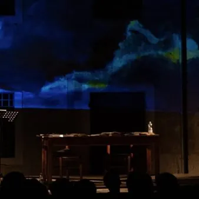

da ven 20 nov a sab 21 nov · dalle 20:00
Il Vint. Marc di Murùs
20/11/26 e 21 20:00 organizzato dal Teatri Stabil Furlan Leture seniche di e cun Martina Delpiccolo e Fabiano Fantini Dopo dal sucès di “Marcho. L’ultima bandiera”, docufilm di Marco Fabbro e Enrico Maso, ora Martina Delpiccolo e Fabiano Fantini a acetin la propueste di…
 Indicazioni
Indicazioni
- Costi e prenotazioni
- Costo non indicato · Prenotazione non indicata
- Programma
- Programma da verificare. Apri la fonte ufficiale per orari e possibili aggiornamenti.
- In caso di maltempo
- Nessuna indicazione specifica pubblicata.
- Note
- Acquisito automaticamente dalla fonte.
L’EVENTO
Descrizione completa
Leture seniche di e cun Martina Delpiccolo e Fabiano Fantini Dopo dal sucès di “Marcho. L’ultima bandiera”, docufilm di Marco Fabbro e Enrico Maso, ora Martina Delpiccolo e Fabiano Fantini a acetin la propueste di aprofondî la dimension umane di Marc di Moruç (XV secul), l’ultin puartebandiere dal Stât patriarcâl di Aquilee o – come ch’al scrîf Albert Travain – da la prime Mitteleurope.
Un percors creatîf origjinâl ch’al sgjave insot tal anim di chel om ch’al veve paiât cu la vite il coragjo di frontâ l’invasion da la Republiche di Vignesie, ta la sô elaborazion, tal so madressi e ta lis conseguencis di une sielte, tocjant i temis da l’identitât, da la coerence e da la justizie. Une operazion di trasfigurazion leterarie e teatrâl di “memorie” vive che e fevele al vuê. Dopo il successo di “Marcho. L’ultima bandiera”, docufilm di Marco Fabbro e Enrico Maso, ora Martina Delpiccolo e Fabiano Fantini accolgono la proposta di approfondire la dimensione umana di Marco di Moruzzo (XV secolo), l’ultimo portabandiera dello Stato patriarcale di Aquileia o – come scrive Alberto Travain – della prima Mitteleuropa.
Un percorso creativo originale che scava “dentro”, nell’animo dell’uomo che pagò con la vita il coraggio di opporsi all’invasione della Repubblica di Venezia, nel suo travaglio, nella maturazione e nelle conseguenze di una scelta, attraversando i temi dell’identità, della coerenza e della giustizia. Un’operazione di trasfigurazione letteraria e teatrale di memoria viva che parla all’oggi.
Biglietto intero: € 15,00
Biglietto ridotto: € 10,00 (riservato a under 25, over 65 e possessori di un biglietto "intero" di uno spettacolo precedente)
Biglietto super-ridotto: € 5,00 (riservato a under 12, abbonati ad altre stagioni teatrali e possessori di un biglietto "ridotto" di uno spettacolo precedente)
Riduzione: € 2,00 (riservata a operatori del settore e artisti, persone con disabilità e possessori di un biglietto "super-ridotto" di uno spettacolo precedente) Per informazioni: info@teatristabilfurlan.it / tel 392 3273719
www.teatristabilfurlan.it
IL PROGRAMMA
Programma e orari
Appuntamenti raccolti dalle fonti elencate. Dove manca un orario, non è ancora disponibile in questa scheda.
Programma pubblicato
- Dal 2026-11-20 al 2026-11-21
INFORMAZIONI UTILI
Prima di partire
- Controllare la fonte prima di partire.
ORGANIZZAZIONE